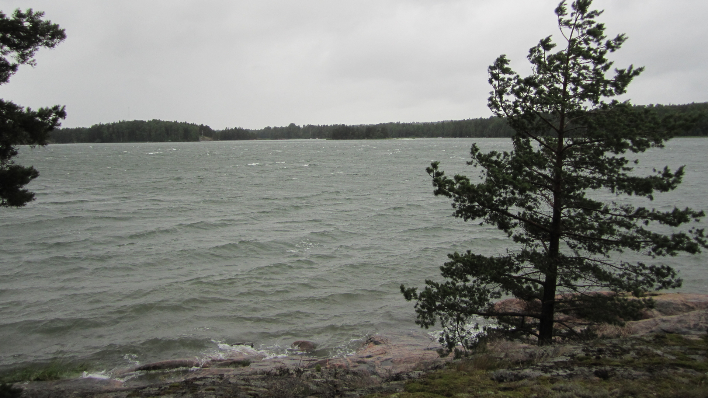

The purpose of the sites rails2jorvas, rails2jorvasSV (in Swedish), rails2jorvasFI (in Finnish), is the present something unbelievable and possibly make this dream to be true someday in the spirit of
We choose to go to the moon in this decade and do the other things, not because they are easy, but because they are hard, because that goal will serve to organize and measure the best of our energies and skills, because that challenge is one that we are willing to accept, one we are unwilling to postpone, and one which we intend to win (J.F. Kennedy)
All three sites links to a presentation in corresponding language with same proposals.
på svenska. 52 HTML sidor. (Presentation in Swedish) Start sidan för presentationen.
suomeksi. 21 HTML sivua. (Presentation in Finnish) Aloitussivu esitykselle.
in English. 10 HTML pages. Start of the presentation.
By clicking on pads on the map an info window will open tells about the name of the target and coordinates of the target.

External sources
List of pages
| A59 | ./en/Helsingfors.html | Helsinki area |
| A65 | ./en/JorvasTallinn.html | Jorvas (Finland) - Tabasalu (Estonia) |
| A64 | ./en/JorvasTallinnBIL.html | Transporting cars by train: Jorvas (Finland) - Tabasalu (Estonia) |
| A61 | ./en/KarisJorvas.html | Jorvas - Karis/Karjaa, new coastal railway |
| A58 | ./en/KarisKapellskar.html | Kapellskär - Åland islands - Karis |
| A60 | ./en/KarisKapellskarBIL.html | Transporting cars by train: Karis (Finland) - Lemland (Åland islands) - Kapellskär (Sweden) |
| A63 | ./en/Stockholm.html | Stockholm - Kapellskär |
| A66 | ./en/expressToReval.html | Express to Reval |
| A57 | ./en/index.html | Main page (index) |
| A62 | ./en/jorvas.html | Jorvas |
| A47 | ./fi/HaapsaluHiiu.html | "Haapasalosta" - "Haapajoelle" |
| A49 | ./fi/Helsingfors.html | Helsingin metropolialue |
| A56 | ./fi/JorvasTallinn.html | Jorvas - Tallinna |
| A55 | ./fi/JorvasTallinnBIL.html | Jorvas/Suomi - Tabasalu/Viro |
| A51 | ./fi/KarisJorvas.html | Jorvas - Karjaa, uudistettu ja uudelleen kiskottu rantarata |
| A48 | ./fi/KarisKapellskar.html | Karjaa - Ahvenanmaa - Kapellskär/Ruotsi |
| A50 | ./fi/KarisKapellskarBIL.html | Karjaa/Suomi - Lemland/Ahvenanmaa - Kapellskär/Ruotsi |
| A52 | ./fi/Tallinn.html | Tallinna |
| A46 | ./fi/index.html | Aloitussivu (indeksi) |
| A53 | ./fi/jorvas.html | Jorvas |
| A45 | ./fi/kirjais.html | Kirjaisten asema ja Turku |
| A79 | ./fi/nBjorkboda.html | Lounais-Suomi ja pohjois Viro (Level 3) |
| A80 | ./fi/nGoteborg.html | Göteborg |
| A81 | ./fi/nHallsberg.html | Hallsberg |
| A82 | ./fi/nJonkoping.html | Jönköping |
| A83 | ./fi/nKopenhamn.html | Kööpenhamina |
| A84 | ./fi/nLuebeck.html | Lyypekki |
| A85 | ./fi/nOslo.html | Oslo |
| A86 | ./fi/nStockholm.html | Tukholman alue |
| A88 | ./fi/toc2L.html | TOC Level 2 - Kapellskär & Helsinki & Tallinna |
| A87 | ./fi/toc3L.html | TOC Level 3 - Pohjolan korkeanopeuden rautatieverkko |
| ./index.html | ||
| ./license.html | ||
| A15 | ./sv/Helsingfors.html | Från Helsingfors metropol område |
| A19 | ./sv/JorvasKokumae.html | Jorvas - Tabasalu |
| A41 | ./sv/JorvasTallinnBIL.html | Jorvas/Finland - Tabasalu/Estland |
| A25 | ./sv/KarisJorvas.html | Karis - Jorvas |
| A14 | ./sv/KarisKapellskar.html | Kapellskär - Åland - Karis |
| A16 | ./sv/KarisKapellskarBIL.html | Karis - Lemland - Kapellskär |
| A29 | ./sv/Tallinn.html | Tallinn |
| A22 | ./sv/b0.html | Kirjais-Häraholm (Haru fjärden) |
| A36 | ./sv/b1.html | Häraholm-Skagholm (Klobbskärs fjärden) |
| A08 | ./sv/b2.html | Skagholm-Ytterolmos (Kimito tunneln) |
| A17 | ./sv/b3.html | Ytterolmos-Björkboda (Kimito västra) |
| A18 | ./sv/b4_5.html | Björkboda-Karis |
| A02 | ./sv/bjorkboda.html | Björkboda station |
| A23 | ./sv/degerby.html | Degerby station |
| A27 | ./sv/fd0.html | Lemland-Degerby |
| A38 | ./sv/flaka.html | Lemlands station |
| A37 | ./sv/g0.html | Degerby-Algersö |
| A24 | ./sv/g1.html | Algersö-Grillskär (under Delet) |
| A33 | ./sv/g2.html | Grillskär-Långkläppen (Hannskärs fjärden) |
| A11 | ./sv/g3.html | Långkläppen-Trännskär (Styrskärs fjärden) |
| A42 | ./sv/g4.html | Trännskär-Örskär (Kalhära och Trollkobb fjärdarna) |
| A43 | ./sv/g5.html | Örskär-Långkläppen (Norrhära djupet, under Skiftet) |
| A12 | ./sv/index.html | Startsidan (index) |
| A35 | ./sv/j0.html | Söderarm-Flötjan (under Ålands hav) |
| A34 | ./sv/jlv0.html | Flötjan-Lågskär-Vitkubben-Vittensten |
| A32 | ./sv/jorvas.html | Jorvas |
| A06 | ./sv/k0.html | Kapellskär-Rankarö |
| A10 | ./sv/kapellskar.html | Kapellskär station |
| A13 | ./sv/karis.html | Karis station |
| A01 | ./sv/kirjais.html | Kirjais station |
| A70 | ./sv/nBjorkboda.html | Gullkrona fjärden med omnejd (Level 3) |
| A71 | ./sv/nGoteborg.html | Göteborg |
| A72 | ./sv/nHallsberg.html | Hallsberg |
| A74 | ./sv/nJonkoping.html | Jönköping |
| A75 | ./sv/nKopenhamn.html | Köpenhamn |
| A76 | ./sv/nLuebeck.html | Lübeck |
| A77 | ./sv/nOslo.html | Oslo |
| A78 | ./sv/nStockholm.html | Roslagen med omnejd |
| A20 | ./sv/pg0.html | om banan |
| A09 | ./sv/pg1.html | Havsdjupet |
| A44 | ./sv/pg2.html | Båttrafik och farleder |
| A21 | ./sv/r0.html | Rankarö-Söderarm |
| A03 | ./sv/toc1L.html | TOC Level 1 - beskrivning av Kapellskär-Karis banan |
| A69 | ./sv/toc2L.html | TOC Level 2 - Kapellskär & Helsingfors & Tallinn |
| A73 | ./sv/toc3L.html | TOC Level 3 - Höghastighets järnvägsbanor i Norden |
| A30 | ./sv/u0.html | Långkläppen-Herrmanskär (Djupet) |
| A07 | ./sv/u1.html | Hermanskär-Västerön (Österskärs fjärden) |
| A26 | ./sv/u2.html | Västerön-Kalvholm (Bärskärs fjärden) |
| A05 | ./sv/u3.html | Kalvholm-Furuholm (Åbo farleden) |
| A40 | ./sv/u4.html | Furuholm-Kirjais (Rockelholms fjärden) |
| A31 | ./sv/vf0.html | Vittensten-Lemland |